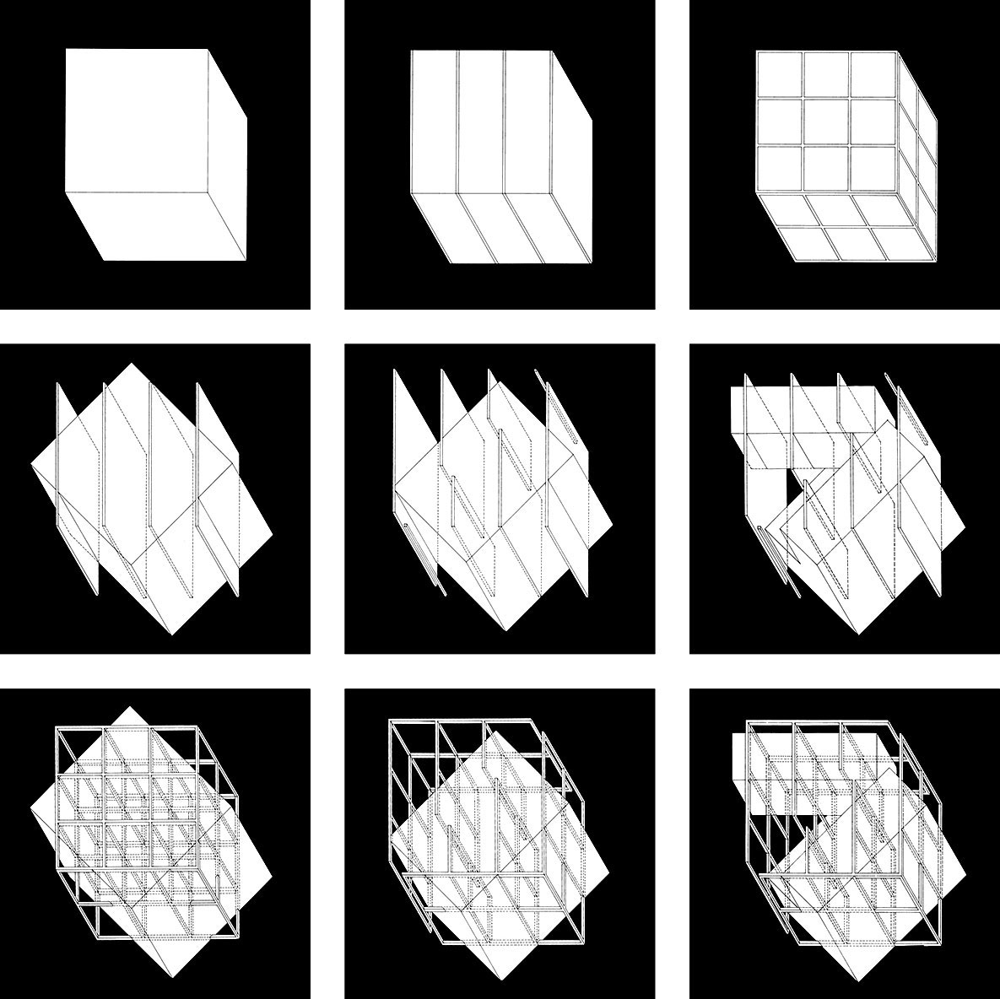

ARCH 602 / Archive & Discourse
DECONSTRUCTIVISM
A critical atlas of broken grids, spatial collisions, and architectural thought.
Explore the matrix
Fig. 01 / House IIILogical Collapse and Spatial Contradiction
Deconstructivism in architecture is grounded in Jacques Derrida’s philosophical post-structuralism. By applying Différance and textual deconstruction, architects challenge traditional rules of visual unity, symmetry, and predictability.
Critical Exegesis of Primary Theorists
Chronological and thematic breakdown of key figures shaping architectural discourse from 1966 to 2023.
Interactive Transformation & Spatial Deconstruction
Visualizing geometric transformation rules (Càndito & Meloni 2023 / Tschumi 1987) and syntactic unloading (Eisenman 1975).
Geometric Transformation Logic
Deconstructivist Paradox:
Demonstrates how isometric transformations disrupt the standard 3x3x3 grid, severing form from single-purpose functional expectation.
Chronology, Syntactic Shifts & Canonical Works
Explore the historical evolution of Deconstructivism from 1967 post-structuralist critiques to 2007 topological and spatial works.
Project & Spatial Work Matrix
Select a project to connect its timeline node to a focused spatial analysis.
| Project | Architect / Year | Analysis |
|---|
Collision Field
Explore how folding, intersection, and fragmentation transform the relationship between a building’s interior and exterior.
Foundational Texts & Collaborations
Select a primary source to examine its key passage, theoretical argument, and spatial consequences.